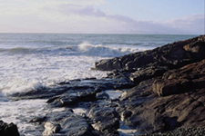
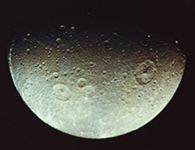

Місяць — єдиний природний супутник планети Земля. Другий за яскравістю об'єкт на земному небосхилі після Сонця і п'ятий за величиною супутник планет Сонячної системи. Станом на 2017 перший і єдиний позаземний об'єкт природного походження, на якому побувала людина. Середня відстань між центрами Землі і Місяця — 384 400 км.
Місяць привертав увагу людей з доісторичних часів. Це другий за яскравістю об'єкт на небосхилі після Сонця. Оскільки Місяць обертається навколо Землі з періодом близько місяця, кут між Землею, Місяцем і Сонцем змінюється; ми спостерігаємо це явище як цикл місячних фаз. Період часу між послідовними новими місяцями становить 29,5 днів (709 годин).
Місяць — єдиний природний супутник планети Земля. Другий за яскравістю об'єкт на земному небосхилі після Сонця і п'ятий за величиною супутник планет Сонячної системи. Станом на 2017 перший і єдиний позаземний об'єкт природного походження, на якому побувала людина. Середня відстань між центрами Землі і Місяця — 384 400 км.
Гравітаційні сили між Землею і Місяцем викликають деякі цікаві ефекти. Найвідоміший з них — морські припливи й відпливи. Гравітаційне тяжіння Місяця сильніше на тому боці Землі, який звернено до Місяця, і слабше — на протилежному боці. Тому поверхня Землі, особливо океани, витягнута в напрямку до Місяця. Іншими словами, на Землі виникають дві опуклості, одна з яких спрямована у бік Місяця, а інша — у протилежний бік. Цей ефект набагато сильніший в океанській воді, ніж у твердій корі, тож опуклість води більша. А оскільки Земля обертається набагато швидше, ніж Місяць пересувається своєю орбітою, рух опуклостей навколо Землі створює два припливи на день.
Місячний ландшафт своєрідний і унікальний. Місяць весь покритий кратерами різного розміру — від мікроскопічних до тисяч кілометрів. Довгий час вчені не могли заглянути на зворотний бік Місяця, але це стало можливо з розвитком технологій. Зараз існують дуже докладні карти обох півкуль Місяця. Детальні місячні карти складають для того, щоб в найближчому майбутньому підготуватися для висадки людини на Місяць, вдалого розташування місячних баз, телескопів, транспорту, пошуку корисних копалин тощо.
У колишньому СРСР було створено «Повну карту Місяця» у масштабі 1:5 000 000 та глобус Місяця у масштабі 1:10 000 000. Для окремих ділянок є великомасштабні карти масштабом від 1:1 000 000 до 1:40, створені в СРСР та США. 2011 року в Інтернеті було опубліковано наразі найдокладнішу фотографію зворотного боку Місяця. Зображення було складене з безлічі світлин, отриманих зондом NASA під назвою LRO.
Матеріал з Вікіпедії — вільної енциклопедії.